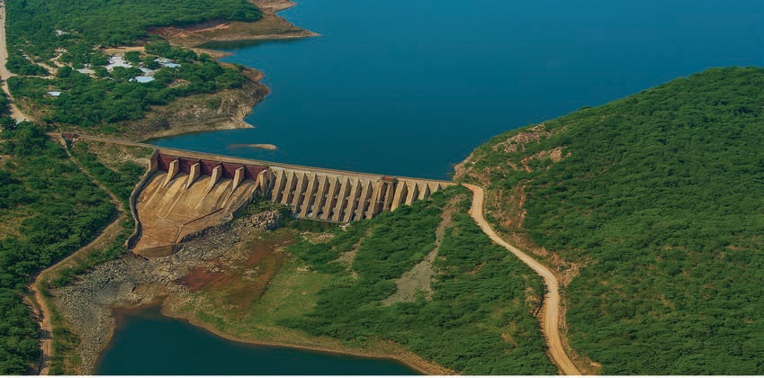
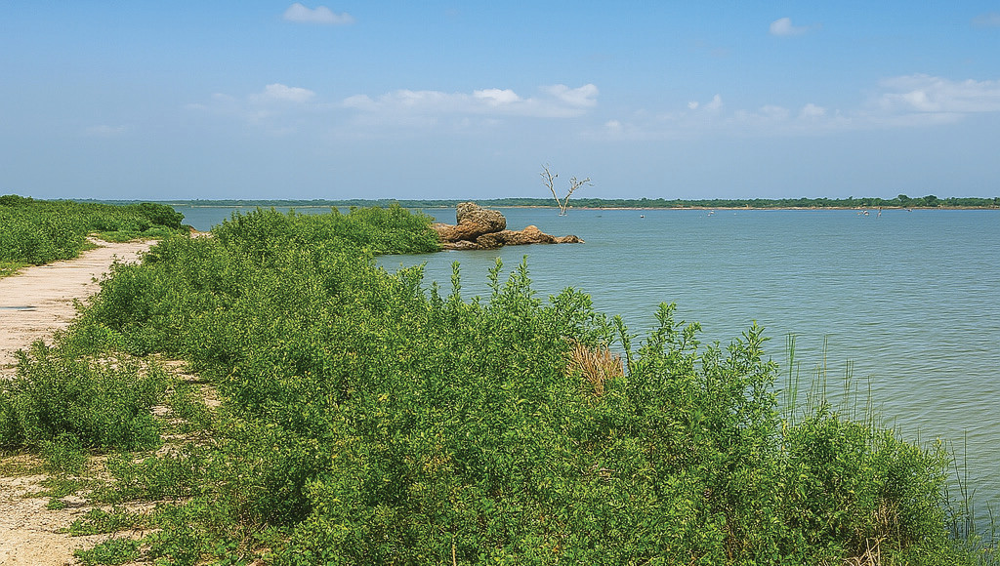

Bwawa la Hombolo
Bwawa la Hombolo lipo katika eneo la jiji la Dodoma, mkoa wa Dodoma. Chanzo cha maji ya Bwawa la Hombolo ni Mto Kinyasungwe. Bwawa hili ni muhimu kwa ajili ya shughuli za kilimo cha umwagiliaji, kunywesha mifugo, uvuvi na matumizi ya nyumbani katika eneo hili lenye hali ya ukame. Kielelezo namba 8 kinaonesha sehemu ya Bwawa la Hombolo.

Chanzo: https://www.biorxiv.org/content/10.1101/452847v2.Full